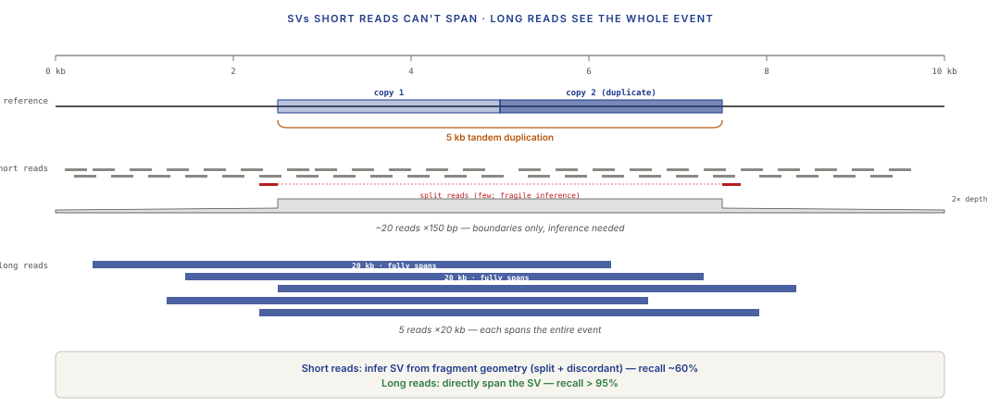
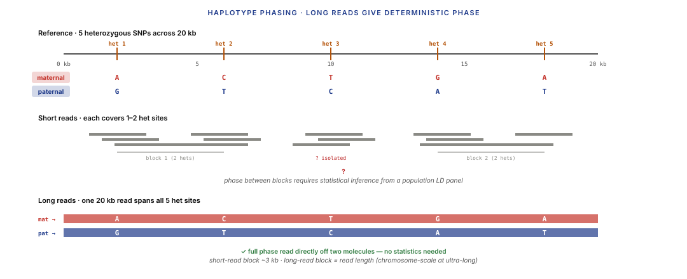
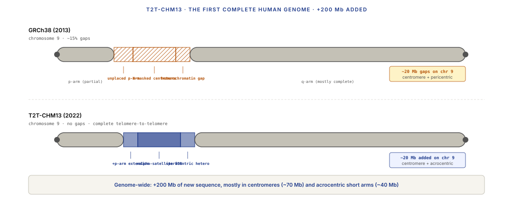
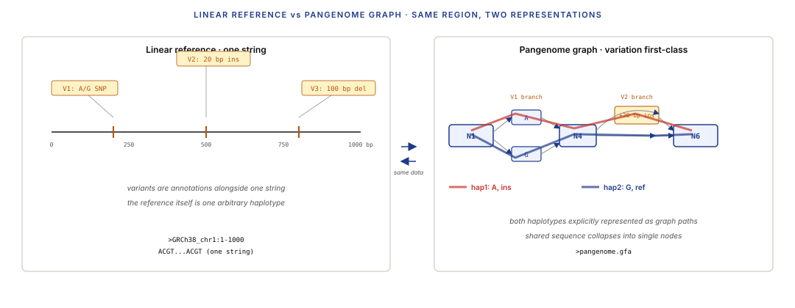
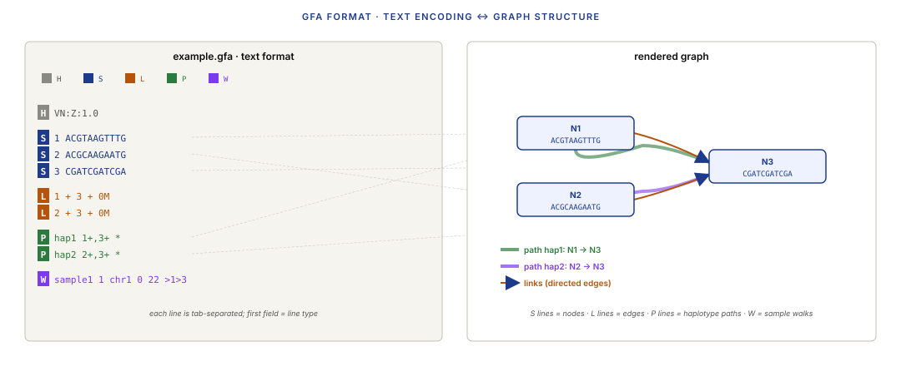
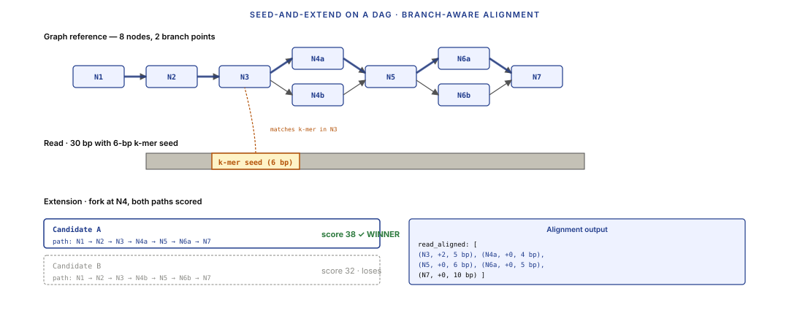
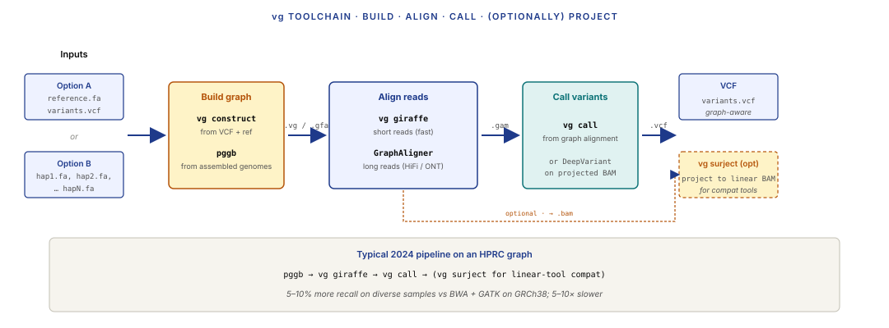
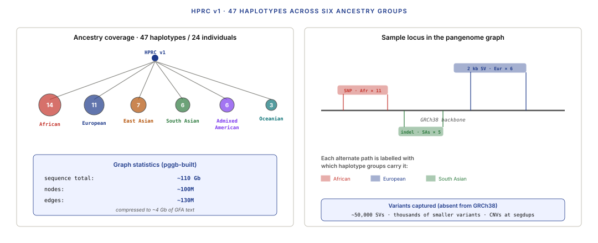

Six moves: read longer and accurately, span the events short reads can't, retire the linear reference, seed on graphs, Viterbi on the DAG, separate the two haplotypes.
Learning objectives
- Compare PacBio HiFi and Oxford Nanopore in 2024 along three axes — read length, per-base accuracy, cost per Gb — and explain why both are now at quality levels that change the analytical calculus vs short reads.
- Name three classes of biological problem that are dramatically easier with long reads than with short: structural variants, tandem repeats, haplotype phasing.
- Explain what a telomere-to-telomere (T2T) assembly is, why it was unachievable with short reads, and what the CHM13 / T2T-CHM13 v2.0 assembly added to the human reference in 2022.
- Describe reference bias — why a single linear reference under-represents variation in populations genetically distant from the reference donor — and state one concrete clinical consequence.
- Explain the pangenome graph concept, read GFA (Graphical Fragment Assembly) format, and describe how a graph genome represents variation explicitly.
- Generalise seed-and-extend alignment from Lecture 2's linear-chain reference to a DAG reference, and state how vg / minigraph / GraphAligner each solve the graph-alignment problem.
- Relate graph alignment to Viterbi decoding — the linear-chain Viterbi of Lecture 2 is the special case where the state graph is a single line; the general case is Viterbi on an arbitrary DAG.
- Describe haplotype phasing from long reads, contrast it with short-read statistical phasing, and frame phasing as a source-separation problem.
- Explain what the HPRC v1 pangenome (47 haplotypes, 2023) adds over a linear reference and state what's still missing.
Part 1 · 25 min Long-Read Tech in 2024
1.1 Where we left long reads in Lecture 1
Lecture 1 introduced three sequencing eras in broad strokes — Sanger (1977), next-gen short-read (2005), and long-read (late 2010s). The long-read platforms in Lecture 1's snapshot:
- PacBio Single-Molecule Real-Time (SMRT) sequencing: ~10 kb average read, ~85% per-base accuracy in the early era.
- Oxford Nanopore (ONT): 10 kb – 1 Mb reads, ~80% per-base accuracy circa 2018.
That framing is now obsolete. Both platforms have made step-function accuracy improvements since 2019, and the analytical workflows that assume "long = inaccurate" don't match 2024 reality.
1.2 PacBio HiFi vs Oxford Nanopore in 2024
PacBio HiFi (Circular Consensus Sequencing, CCS). A HiFi read is constructed by repeated passes of the polymerase around a circularised template; 8–15 passes average gives a consensus base-call with ~99.9% per-base accuracy (Q30+). Read lengths 15–25 kb typical. The 2019 HiFi release changed the cost-accuracy curve completely — HiFi reads are as accurate as Sanger reads, 1000× faster and cheaper per base.
Oxford Nanopore (ONT). Electrical sensing through protein pores. Read lengths 10 kb – 4 Mb+ (the "ultra-long" R10 chemistry regularly produces reads > 1 Mb). Accuracy has improved through three chemistry generations:
- R9.4 (pre-2022): ~95% raw, ~98% after polishing.
- R10.4 (2022–): ~99% raw, ~99.5% with modern Guppy/Dorado basecallers.
- R10.4.1 + Q20+ chemistry (2023–): ~Q20 raw, ~Q25+ polished — approaching HiFi territory.
Modern ONT is now at Q20+ per-base accuracy. Not identical to HiFi but close enough that the 2018-era mental model — "long = noisy" — no longer applies.
Comparative strengths:
| Axis | PacBio HiFi | ONT R10.4+ |
|---|---|---|
| Per-base accuracy | ~99.9% (Q30+) | ~99% (Q20+) raw, Q25+ polished |
| Read length | 15–25 kb typical, up to ~30 kb | 10 kb – 4 Mb+, ultra-long sub-population |
| Throughput (Gb/day) | ~2000 Gb/day (Revio) | ~300 Gb/day (PromethION) |
| Cost per Gb (2024) | ~$10–20 | ~$5–10 |
| Methylation calling | Native | Native |
| Streaming / selective seq | No | Yes (adaptive sampling) |
Both are now used in production for reference-grade genomics. PacBio HiFi is the default for "I need maximum per-base accuracy in a 20 kb read" (SNP-heavy small-variant calling in regions short reads can't reach, plus small-to-medium SVs). ONT is the default for ultra-long reads (spanning 500 kb+ repeat arrays, centromeres, telomeres) and for real-time / selective sequencing use cases.

1.3 Why accuracy crossing ~Q20 changes the field
A per-base error rate around 1% (Q20) is the threshold where several analytical techniques become possible:
Variant calling with per-read consensus. Below Q20, you need heavy alignment-based consensus (many reads voting on each base) to call variants reliably. Above Q20, each read can be treated as a mostly-correct witness, and small-variant callers that treat long reads like short reads (with error correction) work.
Methylation and modification calling with per-read confidence. Lecture 10 §2.4 covered this — ONT Dorado's 5mC model hits >95% accuracy, PacBio HiFi's IPD-based model hits ~95%. Sub-Q20 read accuracy would drown these signals in basecaller noise.
Phasing without statistical inference. Lecture 12 (population genetics) covers short-read haplotype phasing, which uses linkage disequilibrium statistics across a population to infer which allele-pairs on one chromosome. Long reads covering 10+ heterozygous sites let you read phase directly from a single molecule — no population, no statistics, no ambiguity.
Reference-grade assembly. Spanning repeats and long homopolymers is what makes T2T possible. Lecture 3 built short-read assemblies; long reads have made complete chromosome-arm-to-chromosome-arm assembly routine since 2022.
Part 2 · 40 min What Long Reads Unlock
2.1 SVs resolved directly
Structural variants (SVs) — insertions, deletions, inversions, duplications, translocations of 50 bp or longer — were the hardest variant class for short-read sequencing. Lecture 4 covered why: a 100 bp short read that overlaps a 500 bp insertion sees only the break points from each side; reconstructing the insert requires inference from mate-pair geometry, split reads, and local assembly. Sensitivity below 60% was typical for mid-size SVs even on high-coverage short-read WGS.
Long reads change this because a single 20 kb read can span the entire SV plus flanking sequence — the SV is resolved directly from one or a few reads. Detection becomes an alignment problem rather than an inference problem.
Tools:
- Sniffles2 (Smolka et al. 2024). Standard long-read SV caller. Works on both HiFi and ONT. Produces VCFs with precise breakpoint coordinates and SV sequence where possible.
- CuteSV (Jiang et al. 2020). Parallel to Sniffles; distinct internal logic; often run as a second caller for consensus.
- Severus (Keskus et al. 2024). PacBio-focused; produces phased SV calls when combined with HiFi read-level phasing.
2024 performance on GIAB HG002 (gold-standard SV benchmark): precision + recall both > 95% for mid-size (50 bp – 10 kb) SVs. Short-read callers on the same sample are typically < 80% recall, even with dedicated SV tools.

2.2 Spanning repeats
Tandem repeats — short motifs (2–50 bp) repeated many times (sometimes thousands) — include the pathogenic trinucleotide expansions behind Huntington's disease (CAG repeats in HTT), fragile X syndrome (CGG in FMR1), myotonic dystrophy (CTG in DMPK), and dozens of other disorders. The repeat length determines disease penetrance.
Short reads cannot directly count the number of repeat units if the expansion spans more than one read length. Clinical labs used PCR-based fragment-sizing for decades precisely because sequencing couldn't size long repeats.
Long reads span the repeat. Count the repeat units directly on a single read. Tools:
- TRGT (Tandem Repeat Genotyping Tool, Dolzhenko et al. 2024). PacBio's canonical tool.
- Straglr (Chiu et al. 2021). General-purpose long-read repeat genotyper.
- LongTR / NanoRepeat (various). ONT-specific wrappers.
Same principle for segmental duplications (highly similar multi-kilobase blocks duplicated across the genome) and for centromeric and pericentric satellite arrays (kilobase-scale alpha-satellite repeats). These were the regions masked out of short-read analyses because alignment was ambiguous; long reads resolve them.

2.3 Haplotype phasing directly from reads
Every diploid human carries two copies of every autosomal gene — one from each parent. A single locus might have one allele on the maternal chromosome and a different allele on the paternal. Haplotype phasing is the problem of deciding which variants sit on which chromosome.
Short-read phasing is indirect. A 100 bp short read typically overlaps at most 1–2 heterozygous sites; the combinations don't uniquely determine phase. Short-read-based phasing relies on linkage disequilibrium (LD) statistics across a population reference panel (1000 Genomes, HGDP) — probabilistic inference, not direct observation. Accuracy is high for common variants in large populations but drops for rare variants and underrepresented populations.
Long reads break phase ambiguity by spanning multiple heterozygous sites on the same molecule. If a 20 kb read covers 5 heterozygous SNPs, the phase of those 5 variants is read directly off the one molecule — deterministic, not probabilistic, no reference panel required.

Long-read phasing tools:
- WhatsHap (Martin et al. 2016, 2024). Long-read phasing (and short-read with long-range constraints).
- HapCUT2 (Edge et al. 2017). General-purpose phasing with explicit long-read support.
- hifiasm trio mode (Cheng et al. 2021). Uses parental short reads + HiFi to produce haplotype-resolved assemblies.
Phasing is useful for: (1) allele-specific expression analysis, (2) carrier screening for compound heterozygous disorders, (3) tracing tumour evolution via allele-specific CNV, (4) improving variant calling (heterozygous sites get resolved into two clean haplotypes rather than ambiguous mixtures).
2.4 Telomere-to-telomere (T2T) assemblies
The human genome assembly reported "complete" by the Human Genome Project in 2004 had known gaps — ~8% of the genome was missing, concentrated in centromeres, acrocentric short arms, and other highly repetitive regions short reads could not resolve. GRCh38 (2013) still had ~200 Mb of gaps and ~100 Mb of unplaced contigs.
T2T-CHM13 (Nurk et al. 2022) — the first actually complete human genome assembly — was built from ultra-long ONT reads + HiFi + optical-mapping data on a hydatidiform mole cell line (CHM13). "Hydatidiform mole" = a homozygous human cell line (two copies of the paternal genome), which removes the phase-resolution problem — everything is effectively haploid. The T2T team used:
- Verkko (Rautiainen et al. 2023) and hifiasm as the assemblers.
- Ultra-long ONT (~200× coverage, some reads > 1 Mb) to span the longest satellite arrays.
- HiFi (~40×) for accurate consensus inside the long-read scaffolds.
- Extensive manual curation of centromeres and acrocentric arms.
Output: the first complete human genome — no gaps. Added ~200 Mb of sequence to what GRCh38 had included, mostly in centromeric alpha-satellite arrays, ribosomal DNA clusters, and segmental duplications. Key biological gain: the new centromere sequences enabled per-chromosome analysis of centromere dynamics, and the complete rDNA arrays enabled rRNA-biology research that had been limited to gene-copy counting.

Part 3 · 40 min The Pangenome Shift
3.1 Why a single linear reference is a lie
GRCh38, the human reference genome, is a single linear string of ~3 billion bases. It was built in 2013 from a small number of donors (~70% from one individual — Anonymous Donor A / "RP11"). Every short-read variant-calling pipeline you've seen in this course (Lectures 2, 4) aligns reads to this single reference string and reports differences relative to it.
The problem: humans differ from each other by roughly 0.1% at the single-nucleotide level and by 0.5–1% at the structural-variant level. A single reference represents one specific combination of alleles; every other human is represented as a set of differences from that one combination. This is fine for alignment when variation is small; it starts breaking down when:
- A variant is common in the population but absent in the reference donor. The reference simply lacks that sequence.
- A structural variant is common in non-reference-donor populations. Reads from populations with the alternate allele map poorly or not at all; the variant goes undetected.
- A region is highly polymorphic — the reference is one arbitrary draw from a distribution, not a canonical sequence.
The issue is that variation is not noise around the reference — variation is the biological signal, and the reference is one sample from it. Treating it as noise (via "differences from GRCh38") is a categorical mistake, not just an inaccuracy.
3.2 Reference bias — a concrete example
Reference bias is the name for systematic under-calling of variants that differ from the reference. It has real downstream consequences.
The example worth remembering: variants common in African populations but absent in the GRCh38 reference (which has limited African ancestry representation) get called less sensitively than variants common in European populations. A 2019 study (Sherman et al., Nature Genetics) showed that aligning African reads to a GRCh38 augmented with ~300 Mb of African-specific sequence recovered thousands of variants previously called as "no-call" or missing genotypes.
Clinical impact:
- Rare-disease genetics: a pathogenic variant that happens to be common in the patient's population but absent in GRCh38 can map as a false reference match — the variant is invisible at the alignment step.
- Polygenic risk scores (L13): PRS developed on European cohorts transfer poorly to non-European populations partly because of reference-biased variant calling.
- Ancestry inference: underrepresented populations appear less genetically variable than they actually are, distorting ancestry estimates.
This is not a moral argument — it's a real measurement artefact with real clinical consequences. The field's response: extend the reference from one linear string to a graph that represents many human genomes simultaneously.
3.3 The graph genome concept
A graph genome or pangenome graph represents variation as branching paths in a directed graph, rather than as differences from a single linear reference.
The core data structure: nodes are short DNA segments, edges connect segments that co-occur in at least one known haplotype. Traversing the graph along a specific sequence of edges recovers one particular haplotype; traversing a different path recovers a different one. Both haplotypes are explicitly represented.
A concrete example. At a bi-allelic SNP, the graph has two nodes at that position — one for each allele — with incoming and outgoing edges that merge back into the shared sequence flanking the SNP. At an indel, the graph has a branching structure where one path contains the inserted sequence and another skips it. At a common SV, the graph has two (or more) branches representing the SV haplotypes.
The pangenome graph for the HPRC v1 release (47 haplotypes) encodes roughly 110 Gb of sequence in a graph that compresses to ~4 Gb of GFA text. Compressed because most of the genome is shared across haplotypes; the graph only branches where haplotypes disagree.
![Three bands. Top: a 2 kb locus with three variants labelled V1 (common in European populations, present in GRCh38), V2 (common in African populations, absent from GRCh38), V3 (common in East Asian populations, absent). Middle: three sub-panels showing reads from each population aligned to GRCh38 — European reads call V1 correctly but miss V2/V3; African reads miss V2 (flagged as no-call/false ref); East Asian reads miss V2 and V3. Bottom: same reads aligned to a pangenome graph — all three variants called correctly in every population, annotated 'pangenome includes all three variants as graph branches'.](../diagrams/lecture-11/06-reference-bias.svg)

3.4 GFA — Graphical Fragment Assembly format
The standard pangenome file format is GFA (Graphical Fragment Assembly). It's a simple text format that encodes the graph structure plus optional metadata.
A minimal GFA file:
H VN:Z:1.0 # header, version S 1 ACGTAAGTTTG # segment: node ID=1, sequence=ACGTAAGTTTG S 2 ACGCAAGAATG # segment: node ID=2, alternative allele S 3 CGATCGATCGA # segment: node ID=3, flanking sequence L 1 + 3 + 0M # link: node 1 forward → node 3 forward (0 bp overlap) L 2 + 3 + 0M # link: node 2 forward → node 3 forward P hap1 1+,3+ * # path: haplotype 1 traverses nodes 1+ then 3+ P hap2 2+,3+ * # path: haplotype 2 traverses nodes 2+ then 3+ W sample1 1 chr1 0 22 >1>3 # walk: sample 1's path through chromosome 1
Line types:
H— header with version and metadata.S— segment (graph node with sequence).L— link (directed edge between segments).P— path (a named haplotype through the graph).W— walk (a sample's haplotype path in a bandage-compatible format; GFA 1.1+).
Tooling:
- vg (Garrison et al. 2018) — the reference implementation; full graph alignment and analysis.
- minigraph (Li 2021) — fast graph construction and alignment; simpler graph model (no complex cycles).
- pggb (Pangenome Graph Builder, Garrison et al. 2024) — builds a graph from a collection of whole genomes.
- odgi (Guarracino et al. 2022) — graph manipulation and analysis.

Part 4 · 30 min Graph-Based Alignment — Seed-and-Extend
The genomics material in this Part is the algorithmic generalisation of Lecture 2's seed-and-extend alignment from a linear reference to an arbitrary directed acyclic graph (DAG) reference. Part 5 then zooms in on the underlying dynamic-programming structure as Viterbi on a DAG.
4.1 Seed-and-extend generalised to DAGs
Lecture 2's seed-and-extend alignment worked on a linear reference:
- Pick k-mers from the read.
- Look up each k-mer in the reference's k-mer index to find candidate alignment positions.
- For each candidate, extend the alignment base-by-base using dynamic programming (Smith-Waterman or banded variants).
- Report the best-scoring alignment.
On a graph reference, every step needs modification:
- K-mer indexing on a graph. Each node has a sequence; k-mers that span multiple nodes (overlap edges) need to be indexed as "k-mer plus path" rather than "k-mer plus linear position." In practice, tools enumerate all k-length paths in the graph and index each one.
- Seed placement gives a starting node (not just a position).
- Extension is no longer along a linear chain — the extension has to branch whenever the graph branches. At each step, extension can continue into any out-edge of the current node.
- Scoring becomes the maximum over all graph paths of length matching the read: a much larger search space than the linear case.

4.2 The graph-alignment toolchain
Three dominant tools with different algorithmic choices:
vg (Garrison et al. 2018, Nature Biotechnology). The reference implementation. Implements full graph alignment with precise scoring. Slower than short-read aligners by ~5–10×. Ships with a complete toolchain: vg construct (build graph from VCF + reference), vg giraffe (fast short-read graph alignment), vg map (accurate general-purpose), vg deconstruct (pull variants from alignments), vg surject (project graph alignments onto a linear reference for short-read-tool compatibility).
minigraph (Li 2021). Focused on speed and simplicity. Uses a simpler graph model (no nested variation) and a minimap2-derived alignment core. Much faster than vg; less expressive for graphs with complex structure. Popular for rapid pangenome construction.
GraphAligner (Rautiainen & Marschall 2020). Long-read-specific graph aligner. Uses a minimap2-like seed-chain-extend approach adapted for graphs. The standard choice for aligning HiFi or ONT reads to a pangenome graph.
Modern pipeline (2024):
- Build graph with
pggborminigraph cactusfrom a collection of reference-quality whole genomes. - Align reads with
vg giraffe(short) orGraphAligner(long). - Call variants with
vg callor a caller adapted to graph alignments. - Project to linear with
vg surjectif downstream tools expect linear BAMs.

4.3 Alignment-to-path decoding and practical tradeoffs
A graph alignment's output is a path through the graph — a sequence of (node, offset) tuples. Two ways to consume it:
- Direct variant calling on the graph: the path implicitly encodes which alleles were traversed.
vg callreads this out as a VCF. - Projection to linear reference: for compatibility with downstream tools, the graph alignment is projected onto a chosen linear reference (e.g. GRCh38).
vg surjectdoes this; path choices at graph branches become variant calls.
Practical tradeoffs of graph vs linear alignment:
- Recall: 5–20% better for structural variants and for variants common in under-represented populations. The bigger the population-coverage gap, the bigger the gain.
- Runtime: 5–10× slower than short-read linear alignment. Still tractable; HPRC-scale alignments run in hours on a modern machine.
- Tooling friction: many downstream tools still expect linear BAMs;
vg surjectbridges but introduces edge cases. - Graph-quality ceiling: a graph built from population-mismatched samples doesn't help samples outside the build set. Generic pangenomes are a better default; study-specific pangenomes are best for specific questions.
Part 5 · 25 min Viterbi on a DAG
The cleanest genomics-to-EE translation in the whole course. Part 4's seed-and-extend was the operational recipe; this Part rebuilds graph alignment from first principles as Viterbi dynamic programming on a state graph, then generalises from the linear chain Lecture 2 used to an arbitrary DAG.
5.1 From linear alignment to Viterbi
Lecture 2 introduced dynamic programming for sequence alignment as Smith-Waterman / Needleman-Wunsch — a 2D score matrix, filled cell-by-cell, traced back to recover the alignment. A cleaner mental model for the same algorithm:
- The reference is a chain of states (each reference base is a state).
- The read is observed over time (one character per time step).
- The alignment is the Viterbi-optimal state path through the chain given the noisy read.
In Viterbi-decoding terms — familiar from any communications or speech-recognition course — alignment picks the most likely state sequence given the observation sequence under a trellis-structured model. The score matrix of Smith-Waterman is exactly the Viterbi forward accumulator; the traceback is the Viterbi traceback. All of Lecture 2's alignment machinery transfers directly.
The elegance of this framing is that it immediately generalises: swap the chain for any other state graph, and Viterbi still applies. The genomics-specific variation — graph alignment on a pangenome DAG — is exactly this generalisation.
5.2 Generalising Viterbi to a DAG
When the reference is a graph (DAG), the state space changes — the states are now graph nodes, and transitions are graph edges. Viterbi still works: at each step, compute the best score for each state given the best scores at its predecessor states. The structure of the state graph determines the predecessor set per state.
Formally:
- For each read position $t$ and each graph state $s$, maintain $V(s, t)$ = best alignment score ending at state $s$ after consuming $t$ read bases.
- Update:
$$V(s, t) = \max_{s' \in \text{pred}(s)} \left[ V(s', t-1) + \text{match\_score}(s, \text{read}[t]) \right]$$
- At the end, trace back from $\arg\max_s V(s, T)$ to recover the aligned path.
For a linear chain, $\text{pred}(s)$ is a single state, and the algorithm reduces to standard Smith-Waterman. For a DAG, $\text{pred}(s)$ is the set of in-edges; the algorithm naturally handles branches.
![Two side-by-side trellis panels. Left: linear-chain Viterbi — a chain of states on the y-axis, read time steps on x-axis, vertical arrows showing single-predecessor relation, one optimal path traced as a thick coloured line. Caption: single predecessor per state, O(N × T) DP. Right: graph (DAG) Viterbi — states form a DAG with branching structure, multiple incoming edges to each state where the DAG has in-edges, Viterbi path branches at the DAG branch points. Caption: multiple predecessors, O(E × T) DP, same update equation. Bottom: the Viterbi update equation written out, annotation 'only pred(s) changes between linear and graph cases'.](../diagrams/lecture-11/11-viterbi-linear-vs-dag.svg)
5.3 Complexity, correctness, and when graph DP beats linear
Computational cost. Linear-chain Viterbi is $O(N \times T)$ where $N$ is reference length, $T$ is read length. Graph Viterbi is $O(E \times T)$ where $E$ is the number of edges in the graph. For HPRC-scale graphs ($\sim 10^9$ edges), this is 5–10× slower than linear alignment on the same input — meaningful but tractable.
Correctness. The DP is exact: Viterbi on a DAG returns the true optimal path through the graph. The optimality property that makes linear Smith-Waterman work — that the best path ending at state $s$ at time $t$ extends from the best path ending at some predecessor at time $t-1$ — holds unchanged. Graph alignment is not a heuristic approximation of linear alignment; it's a strict generalisation.
When graph DP wins over linear DP. For a read that carries a variant not in the linear reference:
- Linear alignment accumulates a mismatch penalty at the variant site and misaligns the read (or softclips flanking sequence).
- Graph alignment traverses the alternate-allele node and aligns without penalty.
The score difference between the two is the mismatch cost of the variant(s) in the read — small for single SNPs, enormous for multi-kb SVs. Hence graph alignment's benefit concentrates at SV-rich loci and at variants specific to non-reference populations.
When graph and linear are equivalent. For reads that carry only reference-matching sequence, the best graph path runs through the reference-identity nodes, and graph Viterbi collapses to linear Viterbi. No penalty, no gain, just additional runtime. This is why graph aligners are typically 5–10× slower on "easy" reads but much more accurate on "hard" reads — the extra work only pays off where it's needed.
Part 6 · 20 min T2T and HPRC — The State of the Art
6.1 T2T-CHM13 revisited
Part 2.4 introduced T2T-CHM13. Expanding here: the assembly closed the last gaps in the human reference by using CHM13's homozygous (paternal-only) genome to sidestep the phasing problem. The ~200 Mb of added sequence is concentrated in:
- Centromeres (~70 Mb total). Alpha-satellite arrays of 171 bp repeats, arranged into higher-order repeats (HORs). CHM13 resolved these arrays on every chromosome.
- Acrocentric short arms (chr 13, 14, 15, 21, 22; ~40 Mb). Contain rDNA gene clusters and satellite DNA. Previously unresolvable.
- Segmental duplications (~50 Mb). Multi-kb blocks duplicated across the genome at >90% identity. Includes regions important for immune function (NBPF genes, olfactory receptors) and disease (SMN1/SMN2 for spinal muscular atrophy).
- The Y chromosome (not in CHM13 directly, but the T2T-Y assembly published 2023 used a separate donor).
CHM13 is now the default reference for many production pipelines as "T2T-CHM13 v2.0" (incorporates the Y). Some clinical pipelines have migrated; many still on GRCh38 for compatibility.
6.2 HPRC v1 — 47 haplotypes
The Human Pangenome Reference Consortium (HPRC) v1 release (Liao et al. 2023, Nature) extended the T2T approach to a pangenome. 47 haplotype-resolved human genome assemblies (from 24 individuals, most diploid), representing broad geographic diversity:
- African, European, East Asian, South Asian, Admixed American, and Oceanian ancestries.
- Each assembly built with hifiasm in trio mode (both parents short-read sequenced, HiFi of the child).
- Each haplotype near-complete (telomere-to-telomere for most chromosomes).
The pangenome graph: ~110 Gb of sequence compressed into a graph with ~100M nodes and ~130M edges, built with pggb.
Variants captured that were absent from GRCh38:
- ~50,000 structural variants (≥50 bp) common in at least one included population.
- Thousands of smaller-variant haplotypes.
- Copy-number variation at segmental duplications and tandem repeats — now explicit.
Applications: variant calling with ~10% more recall on diverse samples; improved mapping for short reads from populations far from GRCh38's donor; reference-grade data for population-genetic analyses.

6.3 What's still missing
Even with T2T-CHM13 and HPRC v1, the reference is incomplete: 47 haplotypes covers a fraction of human variation (HPRC v2 targets 350; early releases 2024–2025). Rare variants specific to individual families or small populations aren't in the graph and remain invisible to graph-based calling. The HPRC pangenome is human-only; pangenome graphs for model organisms are at different stages of construction. And many downstream tools don't yet natively support graph inputs — the surject bridge works but adds friction.
Part 7 · 20 min Phasing and Haplotype-Resolved Assembly
7.1 The phasing problem
Review: a diploid genome has two copies of each autosome. The two copies are chemically identical in the lab — they're separated in space inside the nucleus but look the same once you've sequenced them. At every heterozygous site, you have two reads: one says "A" and one says "G" (say). Which one is maternal and which is paternal?
A single heterozygous site is unresolvable without external information. Two heterozygous sites on the same short read can be linked — the read directly shows which allele at site 1 co-occurs with which at site 2. But short reads are short; typical haplotype blocks from short-read phasing span only a few kb.
Long reads extend the block length dramatically. A single 20 kb HiFi read can link 5–10 heterozygous sites. An ultra-long ONT read (100 kb – 1 Mb) can phase an entire gene with flanking regulatory elements. The phasing block for long-read data is typically the read length × coverage interaction — chromosome-scale phasing is achievable.
7.2 Trio binning and haplotype-resolved assembly
Three tools dominate:
hifiasm (Cheng et al. 2021, 2024). The default HiFi assembler. Produces haplotype-resolved contigs directly — the assembly output is two separate sequences per chromosome, one per parental haplotype. In trio mode, uses parental short reads to disambiguate: each parent's k-mers phase the child's HiFi reads. In Hi-C mode, uses Hi-C scaffolding to phase when trio data isn't available.
WhatsHap (Martin et al. 2016, v2 Garg et al. 2024). A phaser, not an assembler. Takes a VCF of variant calls and a BAM of long reads; outputs a phased VCF where each heterozygous variant is annotated with its haplotype. Standard choice for phasing clinical data.
HapCUT2 (Edge et al. 2017). Alternative phaser. Uses a graph-cut optimisation rather than WhatsHap's min-cost-flow formulation. Similar performance; different implementation.
2024 outcome: a phased VCF for any diploid human with 30× HiFi coverage — routine. Chromosome-scale phasing blocks are now standard.
7.3 Phasing as source separation
Wrap-up · 10 min Takeaways, homework, and next lecture
What you should take away
- Long reads in 2024 are long and accurate. PacBio HiFi (~Q30) and ONT R10.4+ (~Q20–25) both sit in the reference-grade quadrant that was empty before 2019.
- Long reads unlock SVs, repeats, phasing, and T2T assembly. Each of these was hard-or-impossible with short reads; all four are routine now.
- A single linear reference is a biological misrepresentation of populations. Reference bias has measurable clinical consequences, especially for under-represented populations.
- Pangenomes represent variation as graph structure. GFA format, vg / minigraph / pggb toolchain. HPRC v1 (2023) is the 47-haplotype human pangenome; v2 (350 haplotypes) in progress.
- Graph alignment is Viterbi on a DAG. Lecture 2's linear-chain alignment is the special case where the state graph is a single line. The general case differs only in the predecessor structure of the state graph.
- Phasing is source separation. Supervised with long reads (labels = which read came from which haplotype, read directly); unsupervised with short reads (must infer from LD statistics).
Next lecture
Population genetics fundamentals. Allele frequencies, Hardy-Weinberg, drift, selection, the coalescent. LD as autocorrelation along the genome. Demographic inference from a single genome. Phylogenetics folds in as the coalescent / tree-inference section.
Homework
- Download a PacBio HiFi dataset for HG002 (GIAB benchmark sample) from Ashkenazi Trio data releases. Run Sniffles2 for SV calling and compare the output VCF to the v4.2.1 GIAB SV truth set — report precision and recall for 50 bp – 10 kb SVs.
- Pick one pathogenic tandem-repeat disease (HTT CAG, FMR1 CGG, DMPK CTG). Find public long-read data from an affected individual. Run TRGT or Straglr to count repeat units; compare to the published / clinically-reported repeat length.
- Align 10 reads (simulated or real) to a small GFA graph using vg. Inspect the graph alignment (
.gam) and project to a linear BAM viavg surject. Compare the projected alignments to what a linear-only BWA alignment would have produced. - Construct a minimal pangenome: 3 haplotype FASTA files, run
pggbwith default settings. Inspect the output GFA. How does node / edge count relate to the number of input haplotypes and their divergence? - Compare linear reference alignment (BWA + GRCh38) and graph alignment (
vg giraffe+ HPRC graph) on 1000 Genomes short-read data from a non-European sample. Report: variant-calling recall difference, runtime difference, and one gene locus where the two pipelines' calls disagree.
Recommended reading
- Wenger, A. M., Peluso, P., Rowell, W. J., et al. (2019). Accurate circular consensus long-read sequencing improves variant detection and assembly of a human genome. Nature Biotechnology 37, 1155–1162. (PacBio HiFi introduction.)
- Nurk, S., Koren, S., Rhie, A., et al. (2022). The complete sequence of a human genome. Science 376, 44–53. (The T2T-CHM13 paper.)
- Liao, W.-W., Asri, M., Ebler, J., et al. (2023). A draft human pangenome reference. Nature 617, 312–324. (HPRC v1.)
- Garrison, E., Sirén, J., Novak, A. M., et al. (2018). Variation graph toolkit improves read mapping by representing genetic variation in the reference. Nature Biotechnology 36, 875–879. (The vg paper.)
- Li, H. (2021). minigraph as a potential reference-free pangenome construction approach. bioRxiv. (minigraph.)
- Garrison, E., Guarracino, A., Heumos, S., et al. (2024). Building pangenome graphs. Nature Methods 21, 2008–2012. (pggb.)
- Cheng, H., Concepcion, G. T., Feng, X., Zhang, H., & Li, H. (2021). Haplotype-resolved de novo assembly using phased assembly graphs with hifiasm. Nature Methods 18, 170–175.
- Sherman, R. M., Forman, J., Antonescu, V., et al. (2019). Assembly of a pan-genome from deep sequencing of 910 humans of African descent. Nature Genetics 51, 30–35. (Reference bias example.)
- Rautiainen, M., & Marschall, T. (2020). GraphAligner: rapid and versatile sequence-to-graph alignment. Genome Biology 21, 253.
- Martin, M., Patterson, M., Garg, S., et al. (2016). WhatsHap: fast and accurate read-based phasing. bioRxiv.
- Edge, P., Bafna, V., & Bansal, V. (2017). HapCUT2: robust and accurate haplotype assembly for diverse sequencing technologies. Genome Research 27, 801–812.
- vg wiki: github.com/vgteam/vg/wiki
- pggb documentation: pggb.readthedocs.io
- HPRC data portal: humanpangenome.org
- T2T Consortium: github.com/marbl/CHM13
Appendix — timing summary
| Block | Time | Cumulative |
|---|---|---|
| Part 1 — Long-Read Tech in 2024 | 25 min | 0:25 |
| Part 2 — What Long Reads Unlock | 40 min | 1:05 |
| Part 3 — The Pangenome Shift | 40 min | 1:45 |
| Part 4 — Graph-Based Alignment — Seed-and-Extend | 30 min | 2:15 |
| Part 5 — Viterbi on a DAG | 25 min | 2:40 |
| Part 6 — T2T and HPRC | 20 min | 3:00 |
| Part 7 — Phasing and Haplotype-Resolved Assembly | 20 min | 3:20 |
| Wrap-up | 10 min | 3:30 |
Total: ~3h 30min of content.